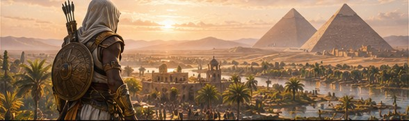

Protagonista
Bayek de Siwa
Un medjay protector de su comunidad que emprende una búsqueda de justicia.
En el Egipto ptolemaico, Bayek y Aya buscan justicia tras una tragedia que cambia sus vidas. Su camino revela el nacimiento de una organización que, con el tiempo, será conocida como la Hermandad de los Ocultos.
En el Egipto ptolemaico, Bayek y Aya buscan justicia tras una tragedia que cambia sus vidas. Su camino revela el nacimiento de una organización que, con el tiempo, será conocida como la Hermandad de los Ocultos.
Este dossier reúne los personajes, el contexto histórico, los lugares y las actividades que definen esta entrega. La información está organizada para descubrir el juego sin perderse entre sus distintas capas.
Las figuras que dan forma a la historia de Assassin’s Creed Origins.

Un medjay protector de su comunidad que emprende una búsqueda de justicia.
Aliada de Bayek y figura decisiva en el origen de los Ocultos.
Reina de Egipto cuya alianza y ambiciones influyen en la trama.
General romano cuyo ascenso altera el equilibrio de poder en Egipto.
Antiguo Egipto · 49–43 a. C. · Una recreación histórica que combina acontecimientos reales y ficción.
Bayek recorre Egipto para descubrir a los responsables de una tragedia familiar. La investigación lo lleva a enfrentarse a una organización secreta y a participar en los cambios políticos que afectan al reino.
Regiones, ciudades y escenarios que dan personalidad a esta aventura.
Oasis natal de Bayek y punto de partida de su historia.
Gran ciudad portuaria y centro cultural del Mediterráneo.
Antigua capital religiosa y política.
Meseta de pirámides y monumentos del Egipto antiguo.
Los sistemas principales que definen la forma de jugar esta entrega.
Niveles, atributos, tipos de armas y progresión.
Águila que permite explorar y marcar enemigos.
Obtener materiales para mejorar equipo y protección.
Tumbas, papiros, ruinas y lugares antiguos.
Bloqueos, esquivas y variedad de armas.
Historias locales que amplían el mundo egipcio.
Qué hacemos durante la aventura, cómo exploramos el mundo y qué sistemas conviene dominar.
Usar a Senu para reconocer campamentos, marcar enemigos y localizar objetivos
explorar tumbas y ruinas
resolver enigmas de papiros
reunir materiales
investigar pistas y completar misiones que revelan la red de los Ocultos.
Detalles y sistemas especiales que merece la pena descubrir durante la exploración.
Las tumbas contienen mecanismos, tesoros y referencias a la civilización antigua.
Los papiros plantean acertijos cuya solución conduce a recompensas ocultas.
El modo Discovery Tour permite explorar el Egipto recreado sin los combates de la campaña.
ARCHIVO EN AMPLIACIÓN · Se añadirán ubicaciones concretas y capturas propias a medida que se complete la documentación de cada juego.
Reinventó la fórmula con progresión RPG, mundo abierto de gran escala y una historia sobre el origen de los Ocultos.